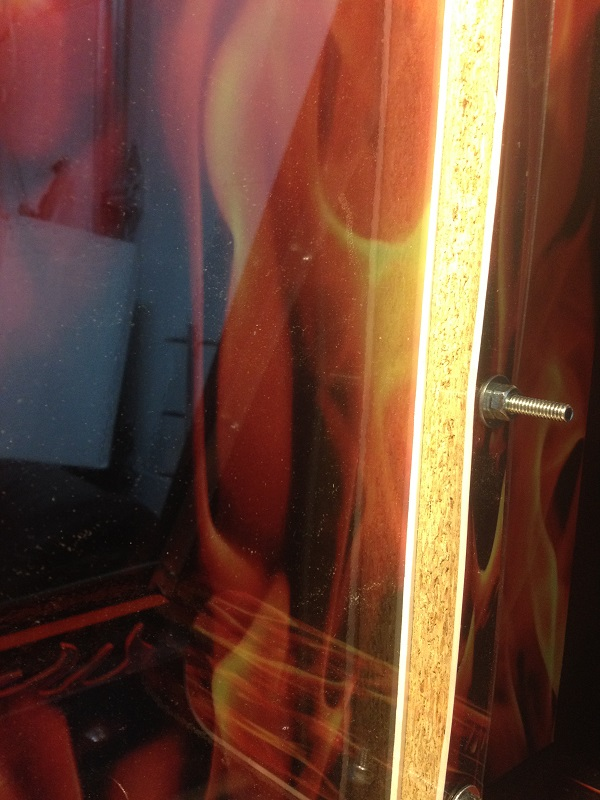
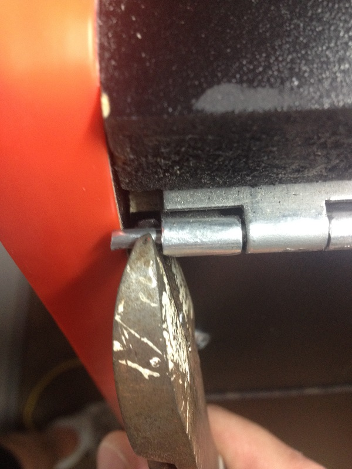
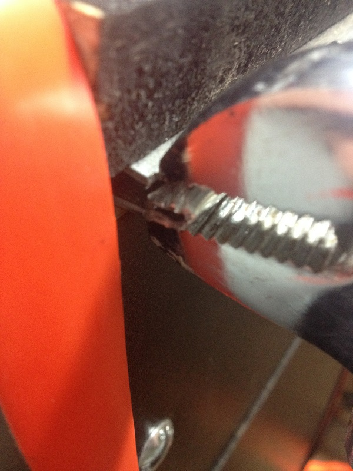
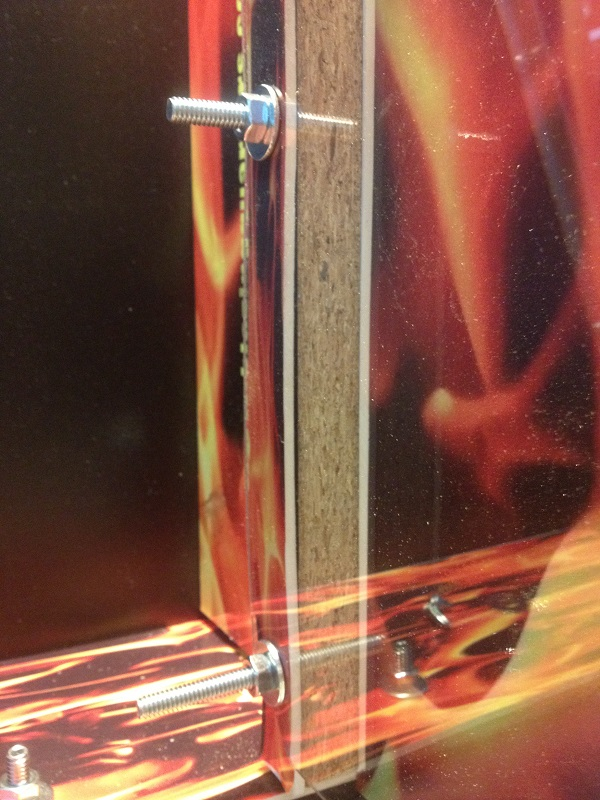
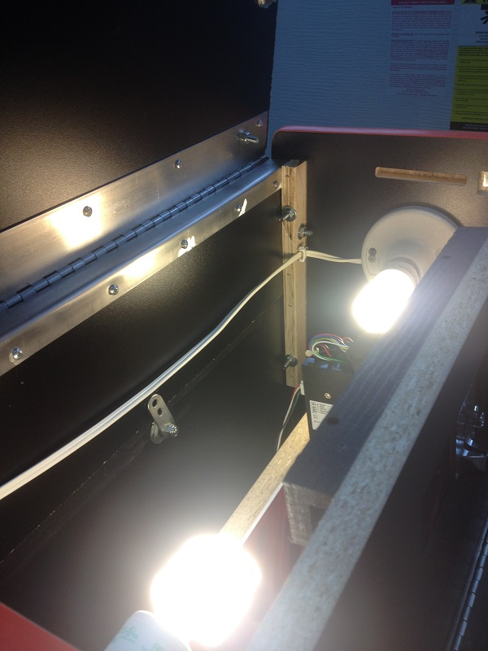

This
site is dedicated to the documentation of supplemental information for
a Blazing Quarters Coin Pusher. I acquired the game
new in box
So
I am writing up a review on the Blazing Quarters Coin Pusher. I really
enjoy coin pushers but I don't like dropping cash into someone else's
pocket to play it. I purchased this game for private use in home, which
is good because its not legal to operate them in my area. Having little
real data on this unit online I sort of just took a shot in the dark
and purchased one with nothing but the vendor data to go against. There
really isn't a lot of info on these. I should mention that yes, this is
private use but I do own/operate other coin-drop on route so I hope I
am providing good feedback to anyone looking to purchase one of these
units.
I
also need to mention that the Blazing Quarter unit is the cheapest "new
in box" pusher available on the market. coming in at about $1300
shipped to your door in the USA there is a good reason to consider
these units. I also want to mention that I am happy with the purchase,
I got a regular unit with full security options and the normal size. (
"the most popular unit they sell") I didn't go for the $100 more larger
unit and that is just fine.. It takes about $300 in quarters to load up
the unit for first play - any larger of a playfield and we are likely
talking a possible $500 in quarters available for "theft" or whatever,
so - I feel this is likely good for quarter drop, if your running
tokens that might be a different story, or if your baiting the game.
The
game is about the width of a wide-body pinball machine and comes up to
about the DMD area of a pinball machine, its the depth of a very small
arcade unit. It is made with sawdust style particle board the same
stuff most arcade units are made of, it uses standard plywood in a few
areas but nothing notable. Weights around 80-120lbs, give or take some
change (haha). The unit has one lock on the rear along with power
(standard arcade power unit). The top of the unit has two key's (keyed
the same as the rear, and I assume every other unit they sell and make)
The front door (cash door) is a large door, uses a eyehook for a
padlock (you do need to provide one to put on route) One thing to note
about the front cash door, it needs to open 180 degrees fully, to
access the playfield. This is an important consideration if your
needing to load or bait the machine from the front.
The
unit isn't shipped very well, its quite literally thrown on a pallet
and wrapped with plastic, my unit was scuffed lightly and had chips out
of the kick plate area in the veneer exposing the particle
board. Delivery of the game took about 30 days from order to truck drop.
I
did some extensive testing on the payout to the player, as well as the
payout to the owner/operator (the take) for the respect of operators I
am not publishing this data. However if you contact me I am happy to
have discussions about what you might expect.
So
the good, I admit my good list is far smaller then my bad list - but
hey if your considering this purchase you want to know the bad. The
good is obviously what you expect.
The
Good List
- Built in 'merica (America) by 'merican's always good to
support local, even if most parts in the game are made in china (hehe)
- The unit seems well built in the mechanical architecture -
simple design means little failure
- The unit as advertised uses a normally powered off coil for
the payout shoot, meaning less wear - and less heat (aka no fire)
- The unit has enough bolts in it to drop the game off a
tailgate and it would likely survive
- The unit comes standard with a compararitor coin mech
The
Bad List
- Unit is not provided with a cash box, in fact this is a bit
of a larger issue.. literately. To effectively trap all coins as part
of the "take" you need a cash box about 20"x20" to effectively catch
everything that will drop to the operator and I have found
from testing that quarters can still get trapped up in spots inside the
machine.
- Unit has a single light source lit from upper left (see
enhancements for ideas here) which makes the game darker on the right
side.
- The "take" holes are crazy huge - while really good for the
operator there is no way to adjust them, it is incredibly hard to self
modify this because of the tight tolerances. This is really obnoxious.
(see enhancement ideas)
- Unit is overall well built, but attention to detail is
totally out the door, you get what you pay for here. Specifically the
visible screws on the playfield area are different sized - just total
poor detail work. Additionally there are areas where the wood is
showing "natural color" this looks poor quality again. overall the
machine feels like its disposable, which I suppose is the concept in
some way. (see enhancement ideas for all this)
- Another detail issue that affects game play is the coin
drop area is about .10mm too close and quarters get stuck constantly I
have provided a fix in the enhancement area.
- The unit has a simple plumb bob tilt mechanism, the
sensitivity of this is limited - additionally slamming the game quickly
(especially in a downward slam) isn't noticed and thus quick
theft is easy
- The front unit has rivets that are machine drilled to hold
the front glass in place, this is the only security from theft of
removal, additionally tampering could occur
- Keys to open the unit are provided but you require two keys
to open the unit top, so if you loose one key your in trouble, you cant
leave a key with the operator because he needs two to reload the
machine, additionally the same key to open the game top is used to open
the game rear. so the operator cant do anything with out two keys. this
is a poorly designed idea. best to not let your operators have keys. I
see no fix for this without new locks.
- Customer payout shoot has a critical flaw, its built so
that coins naturally shoot out onto the floor, this isn't acceptable,
however its quickly fixed.
- Piano hinges for all doors are exposed and could be
tampered with for theft.
- Unit has no feet on it, leveling or otherwise. particle
board sits directly on the ground, this is a very poor design as it
will get wet and get damaged eventually. Additionally there is no
facility to bolt it to the ground other then "do it yourself" meaning
that there is no area to safely bolt it..
Ultimately
one thing I can say is this unit cant be left alone unattended, I
wouldn't put it anywhere that a operator couldn't see it at all times.
So
what can be done about this mess of terrible, well I provide for you my
"mods" or enhancements - I hope that some day a few are incorporated
into the game as some are cheap and free and easy to fix. I will update
my post if I hear from official sources to any changes. I will start
with free ones and go from there.
Enhancements
List
- Fixing the stuck quarter issue, this one is simple - from
the assembly it looks like they tork the daylights out of the bolts
holding the unit on, simply back off the nut additionally you can put
in a washer. I just backed it off a little and lock-tite the nut so it
wont move around from machine vibration.
- Fixing the "ugly wood"
this also is handy to do while your in there torking nuts. just remove
and spray with satin black krylon paint and your going to have a much
improved look.
- I also took this time to spray some silicon spray lubricant
into the upper pusher area - this stuff is golden for coin-drop never
clogs up and its low level lubricant
- To help prevent the
piano hinges from being tampered with I simply knocked out the hinge
pin about 1/4" and snipped of that amount. Then tapped it back to the
center and using pliers I rolled the ends of the hinge basically
crimping them shut. in so its not possible to pull the pin with simple
tools.
- One theft issue I had was to simply have a stiff
wire like a piano wire, and put it thru the rivet holes on the front of
the unit, if bent correctly it makes an effective "tape measure" cheat.
simply applying some JB weld to the hole effectively removed this
threat.
- Closed up the Take Holes, this was not easy - what I did
was use the plastic from a old "blank cd spindle" cover it was
shaped right and good tough plastic, I cut them to size and carefully
hammered them in, since its particle board its not hard to hammer into,
but be careful not to split the wood, ideally you would drill this
before you hammer into it, without taking the whole unit apart this
isn't possible. I would recommend requesting this feature if you buy a
unit.
- Since my unit was put together with random sized bolts - I
also took this time to run to the hardware store and purchase new bolts
that were better sized for this front view area. Simply knocking them
out and replacing.
- 
- Added a Light
- 
- Added a slam tilt from a pinball machine, I really didn't
like that you could just slam the machine (thus cheating the plumb bob
tilt) and get heavy payout without putting in.. I thought about getting
a g-force sensor or a sensitive mercury switch, but then looking in my
junk box I thought pinball
slam tilt assembly! I just wired it into place with the
existing plumb bob tilt. I mounted it on the underside of the top door
of the cabinet (the most likely place to slam the machine)